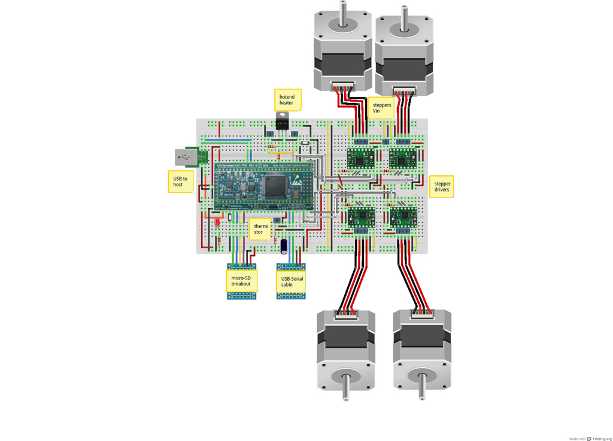

Introduction
There has recently been some interrest in getting Smoothie to run using the LPCXpresso 1769 breakout board for the LPC1769 chip, and components placed on a breadboard.
If you don't mind the hackyness of breadboards, or if tinkering is in fact what you're after, this can be a quite nice solution.
EMI
Warning : Breadboard setups are very sensitive to Electro-Magnetic Interference, you will most probably get false readings, resets and hangs if used on an actual machine, this page is for hackers looking into learning and testing new designs.
It is not approriate for actual machines you want to use on a daily basis and expect to be reliable.
Materials needed
To make this you'll need :
- LPCXPresso1769 board ( 20€ )
- 4 Pololu A4988 drivers or StepSticks
- Two 840 points breadboards
- Various wires
- MicroSD breakout board
- USB-B or mini USB breakout board ( female )
- USB to Serial cable, or an arduino, or similar, you only need this once to burn the bootloader
- Mosfet, LED, resistors, 10uF capacitor, two buttons, and your favorite kind of connector ( we'll use 2.54mm screw terminals )
If you like to tinker with reprap/CNC electronic stuffs you probably already have most of this.
The big picture
This is what smoothie on a breadboard looks like ( graphics are thanks to the awesome fritzing ) :
A short description :
- At the core you have the LPCXpresso board. It can be powered from, and connected to the computer via either the USB port, or the USB to Serial adapter. The USB to Serial adapter can be used in place of the USB port, you'll be able to use Smoothie fine, but then you miss on all the fun where Smoothie connected to the computer via USB shows as both USB/Serial and Mass Storage, exposing the SD Card.
- The MicroSD breakout contains a SD card ( up to 2GB, that's the size of the cheapest you can find those days anyway ). On the SD Card is the config file to configure smoothie, and you can also put there GCode files and execute them from there.
- The 4 pololu drivers ( StepSticks would be fine, and are pin-compatible ) drive the steppers to move the machine and the extruder. If you're here to move a laser, you don't need 4, but only 2 ( or 3 if you have a Z axis ).
- The thermistor and hotend circutis are used to regulate the temperature in the 3D printer's hotend.
TODO : Describe modifications for laser cutting, there are not a lot.
Assembly
Now instructions for a step-by-step assembly.
The current design is quite compact, so there is not really much freedom on component placement, but this is mostly to say what connects to what.
If you don't understand something, or don't see clearly what connects to where, you can look more in detail in the Fritzing file or contact by email.
Warning: we will refer to the pin numbering found on the LPCXpresso PCB; this is different from the standard IC pin numbering, as both columns have increasing numbers from top to bottom instead of a counter clockwise numbering.
Breadboards
You'll need the boardboard in a bit of a special configuration, due to the dimension/pin configuration of the LPCXPresso board :
You just need to remove one of the power supply bars, and attach the two breadboards together ( will require cutting the sticky sheet at the bottom of some breadboards )
LPCPxresso board
You must solder the two long ranges of holes on that board with standard 2.54mm golden pins at the bottom.
Then simply insert into the breadboard, with the first pins on the left at 6 pins from the border.
USB-Serial cable
To flash the bootloader, and later eventally debug, you need to connect to the board via serial. That won't work via USB directly until smoothie in flashed in there.
You can use a FTDI cable, the Arduino USB2Serial board, or even directly an Arduino board, using pins 0 and 1 as TX and RX.
Blue wire in this picture (pin 21) is RX, green (pin 22) is TX. On an FTDI cable, RX is yellow, TX orange. On the arduino USB2Serial and arduino boards, those are indicated. (on some generic FTDI / TTL USB2Serial modules, if you experience problems with the serial connection not connecting, then you might want to try swapping the RX and TX connections between the LPCPxresso board and USB2Serial module , TX pin connects to RX pin and RX pin connects to TX pin, also worthy of note is that there are both 5Volt and 3.3Volt I/O variants of these USB2Serial boards available)
GND ( black ) goes into the bottom rail of the two bottom power bars, and to the GND pin on the LPCXpresso.
The 5V pin goes into the VIN ( 4.5V-14V ) pin on the LPCXpresso ( orange wires ).
The LPCXpresso then outputs 3.3V, which is what we'll be using for our peripherals, from the top left pin ( red wires ). This goes into the top rail of the two bottom power bars. The 3.3V regulator on the LPCXpresso is located on the programmer side, so if you split the boards you will have to add an external 3.3V LDO.
The LED and resistor are not necessary, but it's always nice to know you've connected the power correctly. The resistor value depends on your LED's luminosity and taste : I use 1Kohm on mine. Most leds will want less.
Buttons
You need a reset button to reset your board connected to pin 4, and a bootloader button connected to pin 51 (shown in diagram below) to get it to enter bootloader mode in order to flash the SD card bootloader ( this only needs to be done once ).
Also a play/pause button is used to force the bootloader into DFU mode to flash the firmware, this is connected to pin p2.12, and is not shown in the following diagram.
Both buttons are push buttons, and connect from their respective pins to GND. Lower left is RESET, and top right is BOOTLOADER.
You'll then be able to flash the chip using lpc21isp following these instructions.
To force the bootloader into DFU mode hold the play/pause button, press reset then release play/pause button.
MicroSD card breakout board
Exact connection will depend on the pin order for your microSD breakout board.
Here pictured is an imaginary breakout board that would have the pins in the same order as the LPCXpresso, making things neatly arranged :
- Green is MOSI ( sometimes DO ), Master Out Slave In, pin 5
- Blue is MISO ( sometimes DI ), Master In Slave Out, pin 6
- Yellow is CLK, the Clock signal, pin 7
- Purple is SSEL, also called Cable Select, pin 8
You'll also have to connect red and black to the bottom 3.3V power bar.
It is shown here separated from the breadboard, but most breakouts will plug right on the breadboard, there is room for that.
If you have flashed the bootloader, copy smoothie as "firmware.bin" onto the sd card, it will be written to flash on reset, and you should get a nice welcome on the Serial cable.
If flashing the bootloader works, but flashing firmwares from the SD card doesn't, you probably have a SD card problem. Try swapping DI and DO or using another SD card. SDHC may have compatibility issues, you may want to try an older card.
USB breakout board
USB connection is quite simple. It's pretty much the same as the serial cable : 5V to VIN ( orange ), GND to GND ( black ), connect D- ( green ) to pin 36 and D+ ( blue ) to pin 37 and you're done.
If you have flashed the bootloader and then smoothie, it should show up as both Mass Storage, and USB/Serial to your computer.
Hotend control
These two cricuits allow you to read the hotend's temperature, and change that temperature via a heater. You don't need that for CNC milling and lasercutting, so use a jumper and jump it if that's your case.
The bottom circuit is the thermistor circuit. From pin 20, connect a 4.7Kohm resistor to 3.3V power ( orange ), and a 10uF capacitor to ground. The 2.54mm screw terminal connects the pin 20 and the ground to the two wires from your thermistor. The thermistor doesn't have a polarity so it can be connected either way.
The top circuit is the Mosfet circuit, it controls the heating element in your hotend. Horizontal resistor is 10Kohm and connects from the Gate to GND ( pull-down resistor ) and the other one is 1Kohm and connects the Gate to pin 45 on the LPCXpresso. Left 2.54mm screw terminal is the power input for the heater element. If you want to use only one power supply for both the heater and the steppers ( will work fine with most ATX Power supplies ), you can connect this to the top right power bar instead where we will later have the stepper motors' power rail. The other 2.54mm screw terminal goes to the heater.
Stepper drivers
You need :
- 4 stepper drivers for 3D printing
- 3 for lasercutting with a Z axis, 2 for simple lasercutting
- 3 for CNC milling
Here shown is a picture with 4 stepper drivers :
Bit of a legend :
- Grey wires are STEP inputs
- White wires are DIRection inputs
- The resistors are 10Kohms
- The single dual-2.54mm screw terminal is for power input for the stepper drivers. The top and bottom power bars are for that voltage input, the center one is for the 3.3V from the microcontroller.
- The rest is just wiring
Config
You are going to want to configure Smoothie to work with the pin assignment of your breadboard setup.
Here is the corresponding configuration :
alpha_dir_pin 2.7 # Pin for alpha stepper direction
alpha_step_pin 2.8 # Pin for alpha stepper step signal
beta_dir_pin 2.11 # Pin for beta stepper direction
beta_step_pin 2.12 # Pin for beta stepper step signal
gamma_dir_pin 0.28! # Pin for gamma stepper direction
gamma_step_pin 2.13 # Pin for gamma stepper step signal
Also make sure to disable current control as it will hang if enabled…
currentcontrol_module_enable false #
Notes
LPCLink
The LPC link part of the lpcexpresso must be removed or disconnected as Smoothie will not run if it is connected.
Pinouts
The pinouts for the motors above are an example and actually conflict with other pins in current versions of smoothie so it is recommended you use the pinouts from this chart : http://smoothieware.org/lpc1769-pin-usage.
Done
And there you go !
If you have any question or if something is wrong/missing, please don't hesitate to email.